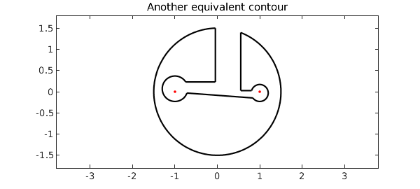

An eye-catching keyhole contour appears on p. 250 of the Complex Variables book by Ablowitz and Fokas [2003].
c0 = chebfun('1.5*exp(1i*pi*s)',[0.51 2.49]); % big circle
c1 = chebfun('1+.2*exp(-1i*pi*s)',[-0.93 0.93]); % right circle
c2 = -c1; % left circle
p1 = c0(0.51); p2 = c0(2.49);
p3 = real(c0(2.49)) + 1i*imag(c1(-0.93));
p4 = c1(-0.93); p5 = c1(0.93); % corner points
p6 = c2(-0.93); p7 = c2(0.93);
p8 = real(c0(0.51)) + 1i*imag(c2(0.93));
s = chebfun('s',[0 1]);
z = join( c0, p2+s*(p3-p2), p3+s*(p4-p3), c1, ... % the contour
p5+s*(p6-p5), c2, p7+s*(p8-p7), p8+s*(p1-p8) );
plot(z,'k','linewidth',1.6), ylim([-1.8 1.8])
hold on, plot([-1 1],[0 0],'.r','markersize',10), hold off
axis equal, title('Ablowitz-Fokas contour','fontsize',14)
Now consider the following integral over this contour (equal to $1/2\pi i$ times the integral as defined by Ablowitz and Fokas), $$ J = {1\over 2\pi i} \int {(z^2 - 1)^{1/2}\over {1+z^2}} dz. $$ We can write the integrand like this,
ff = @(z) (.5i/pi)*(z.^2-1).^(1/2).*(-1).^(real(z)>0)./(1+z.^2);
where the factor involving real(z) appears in order to avoid inappropriate jumps of branch when $z$ crosses the negative imaginary axis. To compute the keyhole integral in Chebfun, all we need is this:
I = sum(ff(z).*diff(z))
I = 0.707106781186548 + 0.000000000000000i
This compares well with the exact answer:
Iexact = sqrt(2)/2
Iexact = 0.707106781186548
Of course, as always with complex contour integrals, you can move the curves without changing the result, so long you are careful not to cross any branch cuts. Here for example we break a few symmetries:
c0 = chebfun('1.5*exp(1i*pi*s)',[0.51 2.38]); % big circle
c1 = chebfun('1-.03i+.2*exp(-1i*pi*s)',[-0.91 0.80]); % right circle
c2 = chebfun('-1+.07i-.3*exp(-1i*pi*s)',[-0.89 0.82]); % left circle
p1 = c0(0.51); p2 = c0(2.38);
p3 = real(c0(2.38)) + 1i*imag(c1(-0.91));
p4 = c1(-0.91); p5 = c1(0.80); % corner points
p6 = c2(-0.89); p7 = c2(0.82);
p8 = real(c0(0.51)) + 1i*imag(c2(0.82));
z = join( c0, p2+s*(p3-p2), p3+s*(p4-p3), c1, ... % the contour
p5+s*(p6-p5), c2, p7+s*(p8-p7), p8+s*(p1-p8) );
plot(z,'k','linewidth',1.6), ylim([-1.8 1.8])
hold on, plot([-1 1],[0 0],'.r','markersize',10), hold off
axis equal, title('Another equivalent contour','fontsize',14)

The result is the same:
I = sum(ff(z).*diff(z))
I = 0.707106781186547 + 0.000000000000000i
Reference:
M. J. Ablowitz and A. S. Fokas, Complex Variables: Introduction and Applications, Cambridge University Press, 2003.